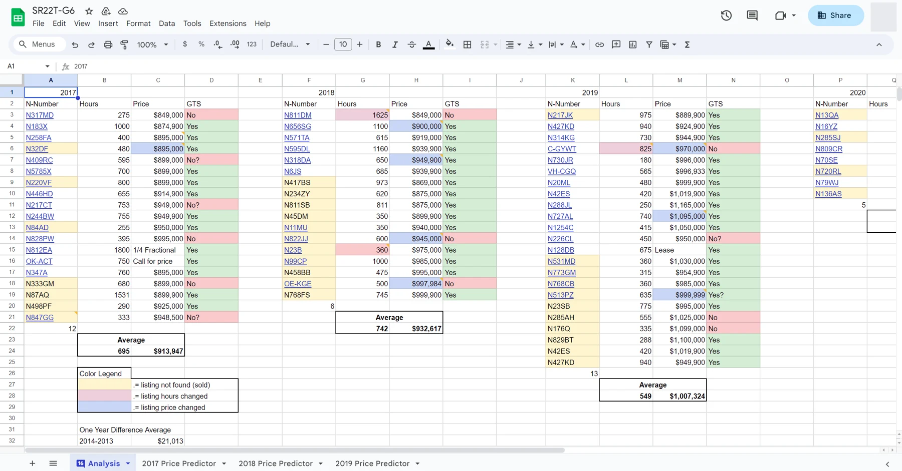
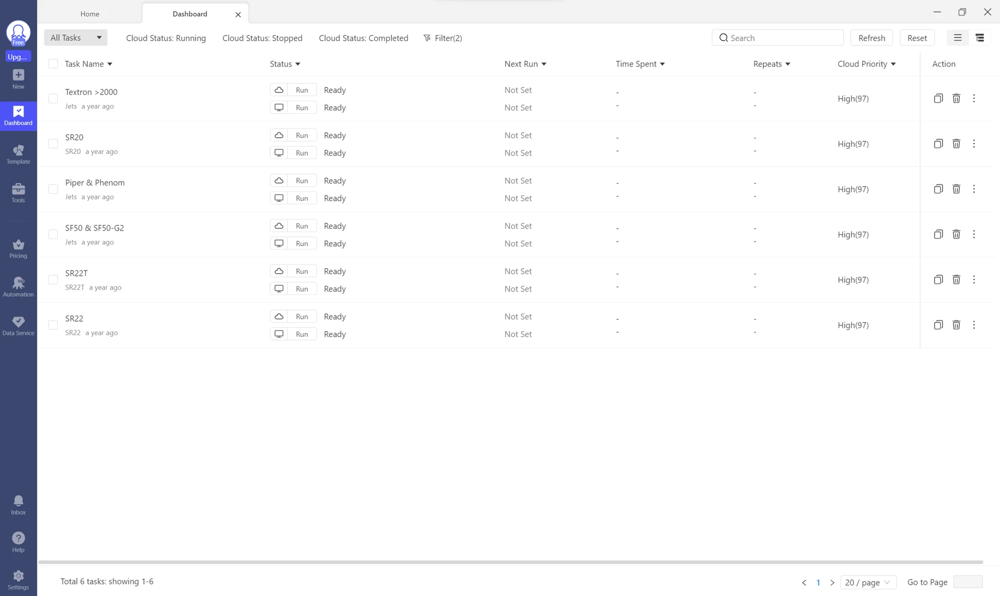
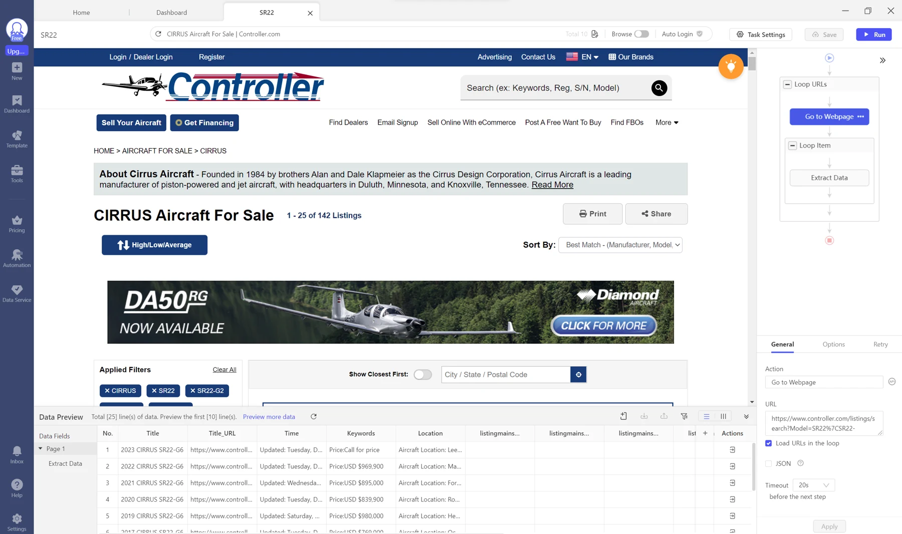
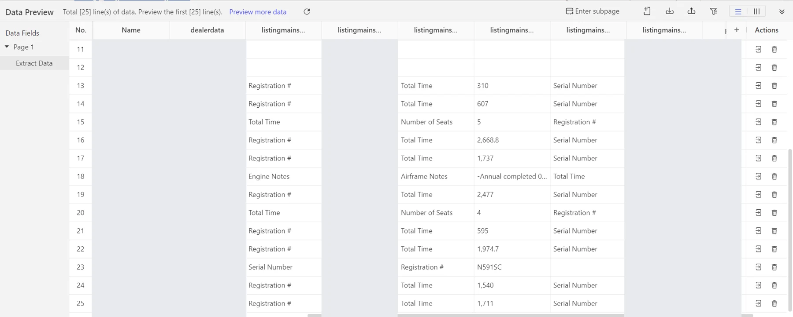
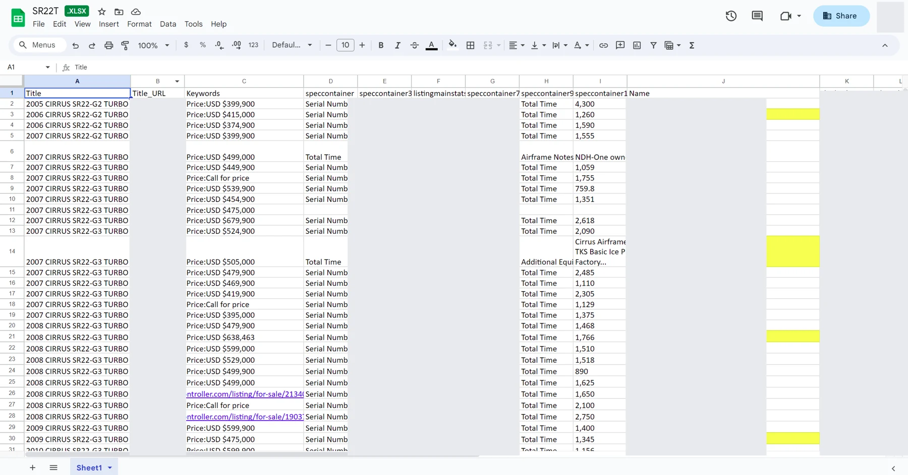

Starting point
For my LifeStyle Aviation internship, I chose market analysis as my project of interest. During the four-week, 120-hour internship, I reviewed Controller listings, updated asking prices, and added newly listed aircraft. The team tracked the Cirrus SR20, SR22, and SR22T families, the SF50 and SF50-G2, Piper and Phenom jets, and Textron jets built before 2000.
The SR22T-G6 comparison spreadsheet grouped listings by model year. It recorded the N-number and linked listing, total airframe hours, asking price in USD, and whether the aircraft included the GTS premium package.

Automation
After a week of updates, I discussed a custom script with friends who coded and chose Octoparse to prototype the workflow. Its free tier supported up to 10 local tasks and 10,000 rows, which was enough for the project. I began with small tasks for individual aircraft types, then consolidated them to cover more models.

I used the consistent listing layout on Controller.com to extract the fields the sales team needed. The workflow handled batches of roughly 200 listing URLs, skipped missing pages, and exported the results as CSV or Excel. I reviewed the export and marked listings from individual owners so the sales team could distinguish them from dealer inventory and identify potential aircraft purchases or sales opportunities.



Result and handoff
Manual updates took 3–5 hours depending on price changes and new listings. With Octoparse, they took 20–30 minutes, most of which went toward reviewing seller types and highlighting individual-owner listings. I handed the spreadsheets to the sales team and spent another one to two weeks consolidating tasks and incorporating their feedback. The company was developing a new Odoo CRM at the time, which gave me a view into how the reporting process could eventually move into the CRM.